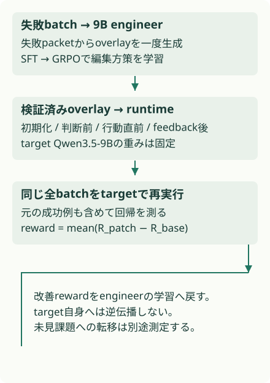
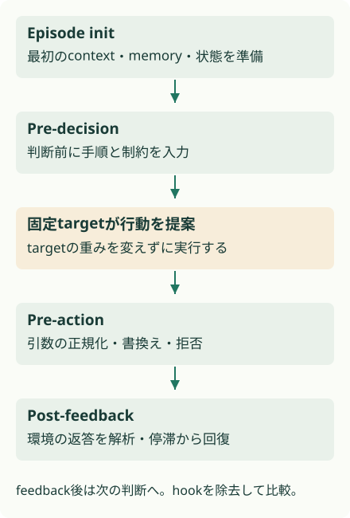
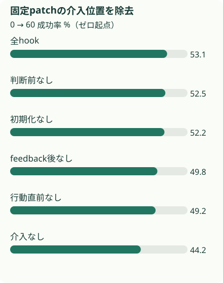

概要
Harness-R1は課題を解くtargetを固定し、その周囲の実行コードを直す9B engineerをSFT＋GRPOで学習する。3ベンチマークの平均成功率は44.3%から53.6%へ上昇。行動直前とfeedback後の介入が除去実験で大きく効いた。
問題設定
入力が少し違うだけで止まる。たとえばLLMが正しい商品を選んでいても、toolが受け付けない引数形式を送り、戻ってきたエラーも読めなければ、同じ失敗を繰り返す。固定の自己反省promptを追加しても安定して改善するとは限らない。
そこでHarness-R1は、失敗記録を読む別モデルに、どこへ実行可能な修正を入れるかを学習させる。修正器を育てる研究だ。
核心
著者の主張 · 論文に書かれていること
著者は失敗trajectoryのbatchから実行可能なoverlayを生成し、同じ全課題を固定targetで再実行した改善をengineerの報酬にする。既存の編集器をpromptで使うだけでなく、編集方策の重みを実行結果で更新する点を提案する。
解釈・批評 · 読書メモ
Multi-Harness RLが課題を解く方策のcreditを変えるのに対し、こちらは修正を提案する方策を学習する。改善の所在が異なる。実行hookを通じてtargetの行動自体を変更できるため、「重みを固定した」は「同じ情報・操作条件で能力だけが上がった」と同義ではない。
モデル / 手法
engineerは解答を出さず、4つの介入箇所を編集する
targetは主実験でQwen3.5-9B。別の9B engineer（修正担当）が、失敗だけを圧縮した記録packetを読み、実行コードへの変更patchを一度だけ生成する。engineerは解答役ではない。修正を渡した後は、targetだけが環境で課題を解く。overlayはepisode初期化、判断前、行動直前、feedback後の4箇所へ入る（図2、§3.1、付録C）。
初期化はcontextや状態を準備し、判断前は検索した手順や制約を渡す。行動直前は提案されたtool callを正規化・書換え・拒否し、feedback後は観測を解析して停滞から回復させる。文脈だけを編集する方式より広い実行権限を持つので、patchの検証と許可された返り値が重要になる。
成功していた課題も含めて再実行する
batch Bの元のrewardをR⁰、patch後をRᴾとすると、Δ_B(P)=(1/|B|)Σᵢ(Rᵢᴾ−Rᵢ⁰)。有効かつ完全に評価できたpatchにはこの差を、invalid/no-op/未完了にはゼロを与える。たとえば失敗4件を成功へ直しても、元の成功5件を壊せば全体では悪化する。この回帰を見逃さないよう、再実行は全batchを対象にする（式1）。
初期の教師あり学習（SFT）には、GPT-5.5 teacherが提案し、実行検証を通った約1,000編集例を使う。RLは別課題splitの約1,500failure packetで学習する。1packetにつきK=8のpatchをsampleし、A_k=(r_k−mean(r))/std(r) と群内で標準化する。このadvantageをengineerのtoken確率比に掛けるclipped GRPOを使う。targetの重みへは逆伝播しない（式2–4、Algorithm 1）。
WebShopの学習rewardはshaped score、ALFWorldとDBBenchは二値成功であり、全てを二値rewardだと理解してはいけない。主結果では3環境の成功率を等重みで平均する。
同じbatchでの改善と、未見課題への移植を分ける
主目的は失敗を見たbatchの同じ課題を再実行するtransductiveな改善。別課題・別targetへの適用は追加実験で扱う。未見targetへの転移では、そのtarget自身の失敗から新しいpatchを作るため、一つのpatchの万能性とは違う。
課題を解く方策と、実行コードを直す方策を分ける
{kind=link}

prompt以外に、行動と観測にも介入する
{kind=link}

失敗例だけを採点すると回帰を見逃す
- 同じ全batchの差Δ_B(P) = meanᵢ∈B [Rᵢᴾ − Rᵢ⁰]
もともと成功していた課題を壊したpatchは減点される。
- engineerの群内比較A_k = (r_k − μ_B) / σ_B ; K=8
同じpacketから作ったpatch同士を比較し、engineerだけを更新する。
なぜ効きそうか
解釈・推論
行動前のvalidationは、モデルが誤る引数形式を環境へ渡す前に直す。feedback後には回復を試みる。この二つの処理が協調すれば、誤った操作の繰り返しを避けながら、次の判断に使う観測も読みやすい形へ戻せる。
promptを書き足すだけでは、操作が実行される瞬間の条件までは固定できない。どの介入が効くかは、失敗分布とtargetによる。
根拠
主表と介入位置の除去実験は、測定条件が異なる
表1はWebShop 500、ALFWorld 500、DBBench 300課題で成功率を評価し、3環境を等重みで平均する。default 44.3%、SFT-only engineer 46.4%、Harness-R1 53.6%。default比は+9.3 ppで、相対9.3%ではない。直接targetをSFTした場合も59.2%→64.2%となる。
図4bは固定patchの介入位置を一つずつ除く別の分析。full 53.1%、判断前なし52.5%、初期化なし52.2%、feedback後なし49.8%、行動直前なし49.2%、介入なし44.2%だった。ここに表1の53.6%を混ぜない。除去の差を足して総効果にすることもできない。
未見課題への図4aでは疎な失敗証拠からの平均改善+8.9 ppを報告する。これは主表のsame-batch目的とは別の根拠だ。Reflectionは2episodeのsuccess@2で、他のsuccess@1と単純順位比較できない。公式コードのURLは本文に明記されているが、このLabは大規模モデルを実行していない。
固定patchの介入位置を除去
{kind=link}

実行可能な理解
固定スクリプトのtargetが商品lookupを行う。session未設定、alias、引数の大文字、入れ子feedbackという4故障を、別のルールベースengineerが失敗traceから見つけ、対応するhookを有効にする。修正後は最初から成功していた課題も再評価する。
証拠用20課題と、商品IDを変えた20課題を分ける。全hookと一箇所ずつ外した場合を比較する。実行処理は変わるがtarget関数は同じ。engineerの重み学習はなく、SFT/GRPOの再現とは呼ばない。
このLabは run.py 単体で実行できます。結果はコードと同じフォルダーに保存されます。
結果
固定ルールの修正器と固定スクリプトのtarget。未見IDでも同じ故障型を使う。学習済み修正能力や新しい故障への汎化は未検証。
未見の商品IDでhookを一つずつ外す
- n: {'evidence': 20, 'held_out': 20}
| 指標 | value |
|---|---|
| base | 0.2 |
| full | 1.0 |
| without_episode_init | 0.8 |
| without_pre_decision | 0.8 |
| without_pre_action | 0.8 |
| without_post_feedback | 0.8 |
生の results.json
{
"note": "固定ルールの修正器と固定スクリプトのtarget。未見IDでも同じ故障型を使う。学習済み修正能力や新しい故障への汎化は未検証。",
"patch_hooks": [
"episode_init",
"post_feedback",
"pre_action",
"pre_decision"
],
"experiments": [
{
"name": "未見の商品IDでhookを一つずつ外す",
"n": {
"evidence": 20,
"held_out": 20
},
"metrics": {
"base": 0.2,
"full": 1.0,
"without_episode_init": 0.8,
"without_pre_decision": 0.8,
"without_pre_action": 0.8,
"without_post_feedback": 0.8
}
}
],
"failure_example": [
{
"step": 0,
"action": {
"tool": "lookup",
"key": "item1"
},
"response": {
"error": "session_missing"
}
},
{
"step": 1,
"action": {
"tool": "lookup",
"key": "item1"
},
"response": {
"error": "session_missing"
}
},
{
"step": 2,
"action": {
"tool": "lookup",
"key": "item1"
},
"response": {
"error": "session_missing"
}
}
],
"full_batch_before": 0.2,
"full_batch_after": 1.0,
"verification": {
"mechanism": "PARTIAL",
"performance": "NOT TESTED",
"scaling": "NOT TESTED",
"production_applicability": "NOT TESTED"
}
}未見IDの20課題では、baseの成功率0.2が全hookで1.0になる。いずれか一つのhookを外すと0.8へ戻る。4故障型を同数で作ったため除去差は等しく、論文のpre-action優位を再現した数値ではない。
検証できたこと
targetは同じ関数のまま。周辺hookを変えると成否が変わり、故障に対応するhookを外すと改善が失われることを確認した。元の成功例への回帰も全batchで調べた。
確認した移植は未知の商品IDまでで、故障型は同じだ。
検証していないこと
LLM、learned engineer、patchコードの自由生成、GRPO、未知の故障への汎化、本番適用性は未検証。toyの規則が識別できる故障だけを作っているため、100%成功しても現実の汎用修正能力を意味しない。自由なruntime編集を本番へ導入するなら、権限の範囲と回帰評価を別途検証する必要がある。
実装
リポジトリのルートで uv run papers/harness-r1/run.py を実行する。Python標準ライブラリだけを使い、CPUで完了する。結果は同じディレクトリの results.json に保存する。
乱数を使う実験はseedを固定した。数値は論文の測定値と別に集計している。
原論文・公式コード対応
| 論文 | このLab | 省略・公式コード |
|---|---|---|
| 図2、付録C hooks | run_task、HOOKS |
Pythonの固定hook集合に限定 |
| §3.1 failure packet | engineer |
失敗型とhookのルール対応。学習なし |
| 式1 batch reward | evaluate、full_batch前後 |
二値のtoy task |
| 図4b 除去実験 | without各hook | 合成20課題。論文数値とは別 |
| 公式実装 | DeepExperience/Harness-R1 | 論文記載のURL。コード内部の対応・実行は未確認 |
一次資料は arXiv v1 PDF。公式実装の実行は行っていない。